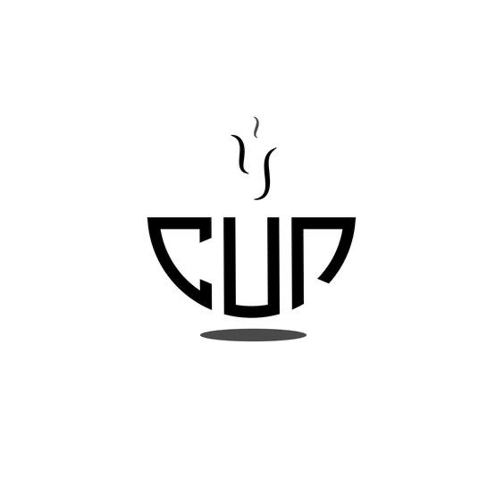
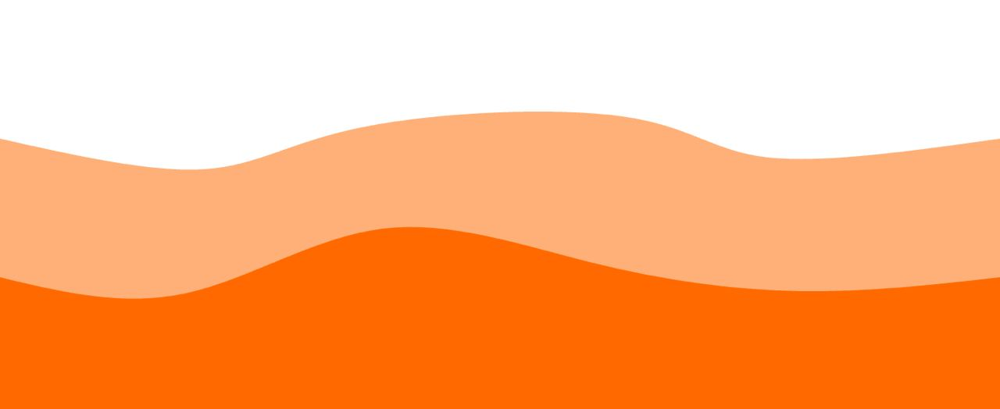
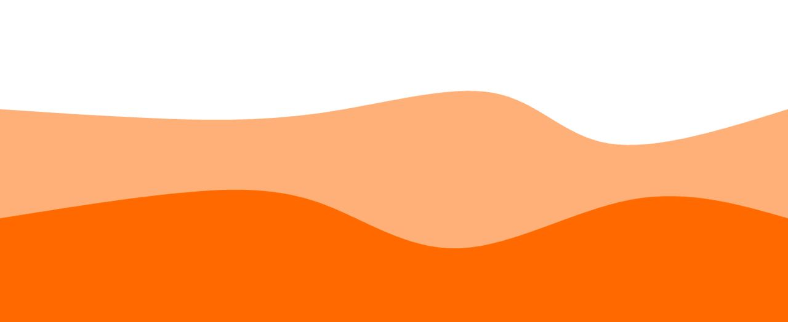
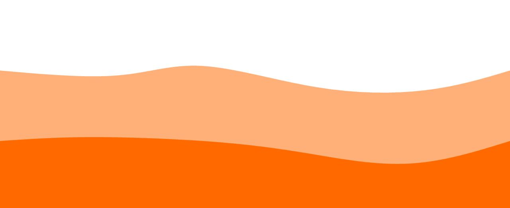
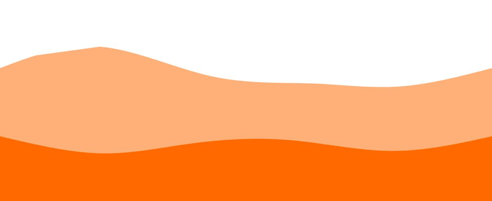
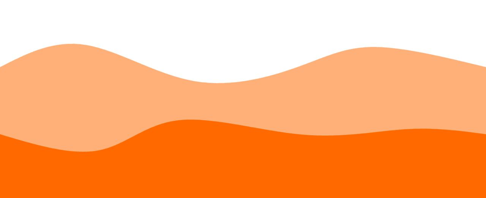
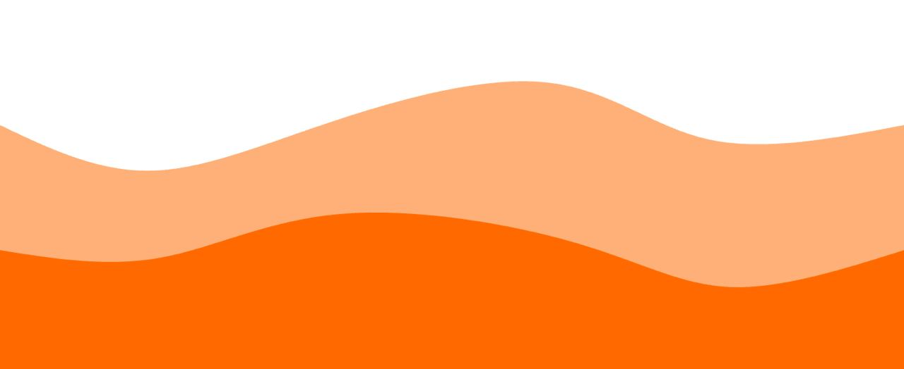
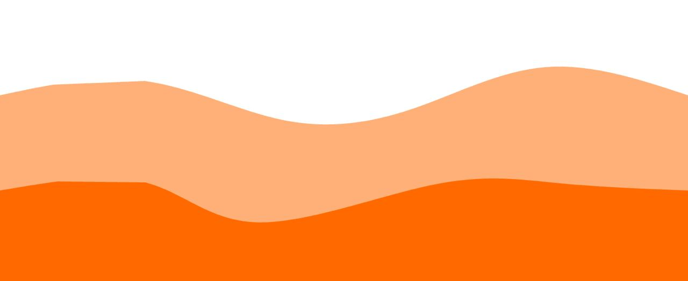

Завдання до лабораторної 4
Введіть число 1
Введіть число 2




Ласкаво запрошуємо вас в кав'ярню CUP, де кожна кавова чашка - це маленький кусочок найкращих смаків світу. Ми створили цей особлийи заклад, щоб привнести в ваше життя більше радості, комфорту і, звісно ж, ароматної кави.




Адреса: 12345, м. Київ,вул.Кавова,1
Години роботи:
Пн-Пт: 8:00 ранку - 8:00 вечора
Сб-Нд: 9:00 ранку - 6:00 вечора
Телефон: +380 50 818 818
Електронна пошта: info@aromatic-world-cafe.com
Соціальні мережі: